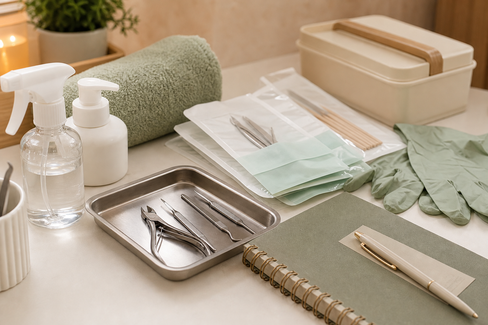
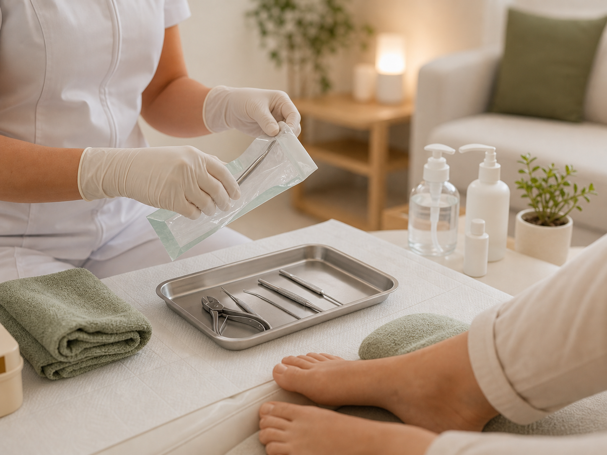
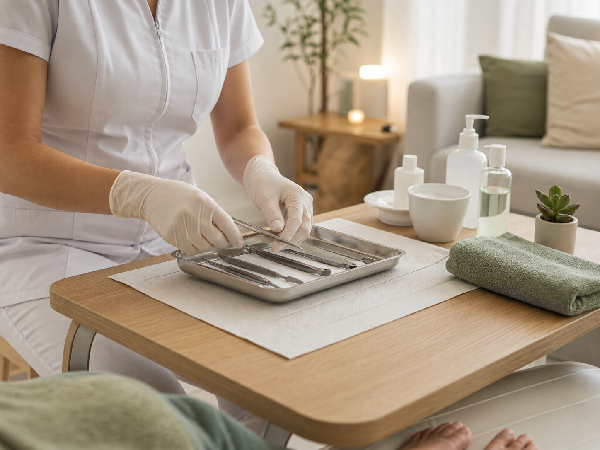
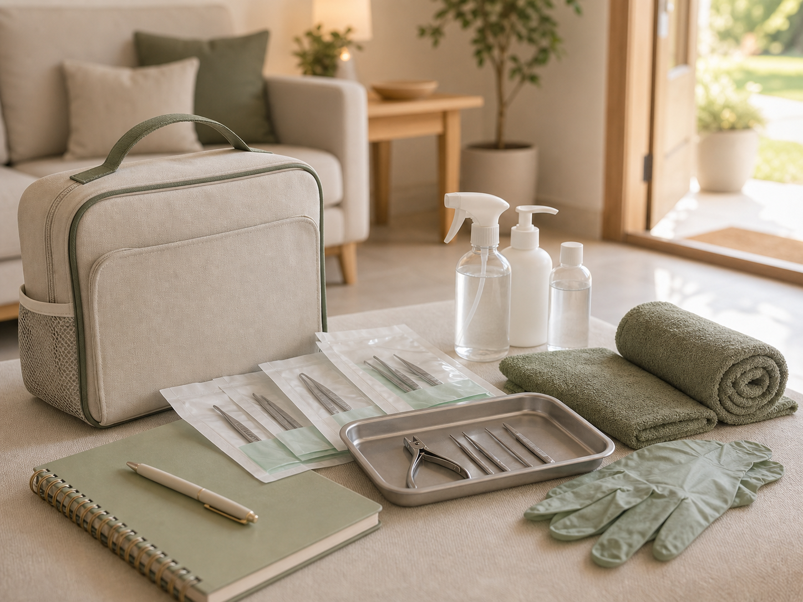

Podologia basica o preventiva
Valoracion, limpieza de surcos, corte de uñas, remocion de durezas, pulido, hidratacion e indicaciones.
Clinica Podologica Flores
Cuidado integral del pie con instrumental esterilizado, protocolos de bioseguridad y atencion personalizada para cada paciente.
Servicios principales
Cada atencion se realiza en domicilio e incluye valoracion, asepsia, tratamiento podologico, educacion e indicaciones posteriores.
Valoracion, limpieza de surcos, corte de uñas, remocion de durezas, pulido, hidratacion e indicaciones.
Evaluacion de sensibilidad, control preventivo y cuidado clinico con foco en seguridad y seguimiento.
Desbastado, limpieza de uñas afectadas, aplicacion de tratamiento antifungico y apoyo medico cuando corresponde.
Manejo de una encarnada, retiro de espicula, curacion avanzada y educacion posterior.
Servicio combinado de podologia clinica y sesion de reflexologia de 40 minutos con musica de relajacion.
Valores preferenciales para 2 a 5 familiares atendidos el mismo dia.
Cuidado seguro
La atencion se prepara con material clinico de calidad, protocolos de bioseguridad y una experiencia tranquila para el paciente.



Profesional
Clinica Podologica Flores brinda atencion integral en la comodidad del hogar, con altos estandares de higiene y continuidad del cuidado.
"Cuidamos tus pies con tecnica, bioseguridad y una atencion pensada para tu rutina familiar."
Cobertura
Reserva disponible para Calera de Tango, Pichilemu, Linares y Yerbas Buenas. Domingos con horario a convenir.

Atencion con reserva previa en domicilio